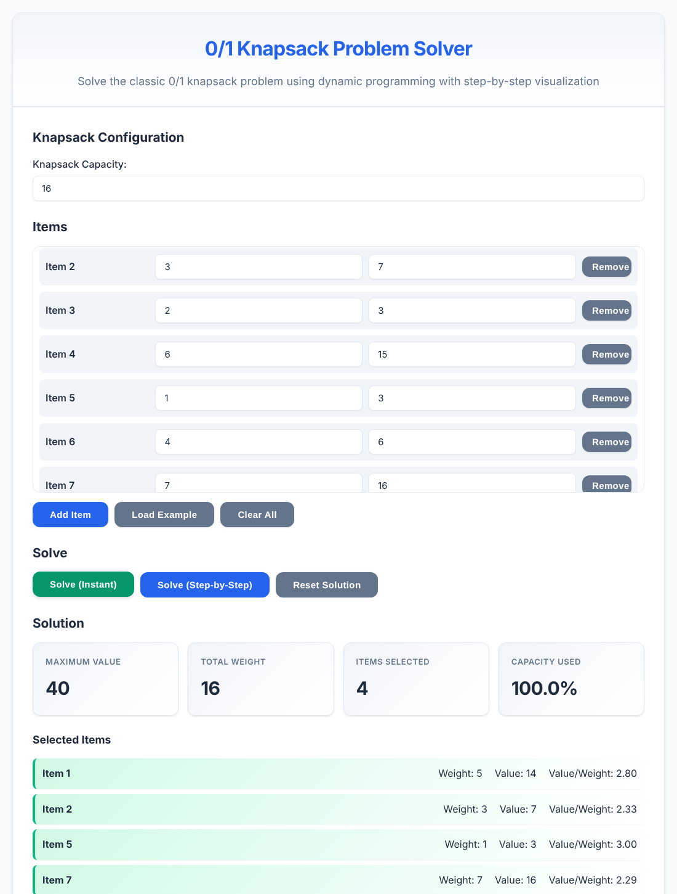

Le problème
Chaque équipement a un poids et une utilité (une note sur le terrain). Il faut maximiser l'utilité totale sans dépasser la capacité. Un objet est pris ou laissé, jamais à moitié : c'est un programme linéaire en nombres binaires.
max 14x_A + 7x_B + 3x_C + 15x_D + 3x_E + 6x_F + 16x_G
s.c. 5x_A + 3x_B + 2x_C + 6x_D + 1x_E + 4x_F + 7x_G ≤ 16
x_i ∈ {0, 1}
Avec 7 objets, on a 27 = 128 chargements possibles, dont respectent les 16 kg. On pourrait tout tester. À 60 objets, il y a plus de 1018 combinaisons, et c'est là que les métaheuristiques comme l'algorithme génétique prennent leur intérêt. Le petit exemple sert à voir chaque calcul et à vérifier le résultat.
Le codage génétique
Une solution est un chromosome : une chaîne de 7 bits, un gène par objet, dans l'ordre A à G. 1 veut dire « l'objet est pris ». Exemple : = trousse + radio, soit 8 kg et 21 points. Une population est un ensemble de chromosomes, et la fitness mesure la qualité de chacun.
Les phases, et pourquoi ces choix
Il existe des dizaines de variantes. Nous en avons fixé une seule, gardée partout : ce site, le support Word et les exercices. Ouvre chaque phase pour voir le choix et les alternatives.
t ← 0 ; stagnation ← 0
P ← N chromosomes aléatoires, réparés et évalués
TANT QUE t < Gmax ET stagnation < Smax
calculer les probabilités de la roulette
RÉPÉTER N/2 fois
tirer 2 parents ; croiser avec la probabilité pc
muter chaque gène des 2 enfants avec la probabilité pm
réparer et évaluer les enfants
SI meilleur parent > meilleur enfant : il remplace le pire enfant
P ← enfants ; t ← t + 1
SI le record est battu : stagnation ← 0 SINON stagnation ← stagnation + 1
RENVOYER le meilleur chromosome rencontré
1. Initialisation : N = 6, tirage uniforme
Choix : 6 chromosomes, chaque gène vaut 1 si le tirage est inférieur à 0,5. Domaine de définition : l'espace de recherche est {0,1}7, 128 points ; le domaine réalisable est le sous-ensemble où le poids reste ≤ 16 kg, 84 points.
Pourquoi : 6 reste faisable à la main tout en gardant plusieurs couples et de la diversité. N doit être pair car chaque couple donne deux enfants. Le tirage uniforme ne favorise aucune région de l'espace.
- Grande population (50 et plus) : meilleure exploration, mais chaque génération coûte plus cher et devient impossible à suivre à la main.
- Population amorcée avec le glouton : démarre fort, mais risque de converger trop vite autour de cette solution.
2. Fitness et débordement : réparation
Choix : la fitness est l'utilité totale du sac. Si le sac dépasse 16 kg, on retire d'abord l'objet de plus petit rapport utilité/poids, et on recommence jusqu'à respecter la capacité. Ordre de retrait : C (1,50), F (1,50), G (2,29), B (2,33), D (2,50), A (2,80), E (3,00). À égalité, la lettre la plus basse part en premier.
Pourquoi : tous les individus restent réalisables, donc chaque fitness est une vraie valeur de sac, et le calcul à la main reste simple.
- Pénalité (on soustrait un terme lié au dépassement) : très simple à coder et garde des gènes utiles dans des solutions interdites, mais le coefficient est délicat à régler et l'algorithme peut rendre une solution non réalisable.
- Rejet (on jette le chromosome et on en tire un autre) : aucun réglage, mais on gaspille des tirages quand la capacité est serrée.
3. Sélection : roulette
Choix : un individu est tiré avec la probabilité Pi = fi / Σf. On calcule les probabilités cumulées et on prend le premier individu dont le cumul dépasse strictement le tirage.
Pourquoi : les bons sont favorisés sans éliminer les autres, et le calcul montre bien le lien entre fitness et reproduction.
- Tournoi : pas de calcul de somme et pression réglable par la taille, mais moins parlant sur une feuille.
- Rang : évite qu'un super-individu écrase les autres, mais demande un tri à chaque génération.
4. Croisement : 1 point, pc = 0,8
Choix : pour chaque couple, le croisement a lieu si le tirage est inférieur à 0,8. Le point de coupure vaut alors ⌊r × 6⌋ + 1, donc entre 1 et 6, et les enfants échangent les queues de chromosome. Sinon, les enfants sont des copies des parents.
Pourquoi : c'est l'opérateur le plus lisible, et il garde ensemble des objets voisins. 0,8 assure beaucoup de brassage tout en laissant passer quelques bons parents intacts.
- 2 points : mélange plus le milieu du chromosome, mais demande un tirage de plus.
- Uniforme : ne dépend pas de l'ordre des objets, mais casse davantage les bonnes associations.
5. Mutation : pm = 0,10 par gène
Choix : chaque gène de chaque enfant bascule (0 ↔ 1) si son tirage est inférieur à 0,10.
Pourquoi : la mutation ramène de la diversité. La référence classique est 1/n ≈ 0,14 ; 0,10 donne en moyenne 4 mutations par génération ici, ce qui reste suivable et suffit à ne pas se bloquer.
- pm trop faible : un gène perdu dans toute la population ne revient jamais.
- pm trop forte : l'algorithme ressemble à un tirage au hasard.
- Échange de deux gènes : garde le nombre d'objets constant, mais ne peut pas changer ce nombre seul.
6. Remplacement : générationnel avec élitisme
Choix : les enfants remplacent les parents. Si le meilleur parent est strictement meilleur que le meilleur enfant, il prend la place du pire enfant.
Pourquoi : la population garde sa taille et le meilleur niveau ne recule jamais, avec une seule comparaison à faire.
- Sans élitisme : plus de diversité, mais la meilleure solution peut disparaître de la population.
- Élitisme fort : converge vite, souvent trop vite.
7. Test de boucle et arrêt : Gmax = 30, Smax = 10
Choix : on continue tant que t < 30 et que le record a été battu il y a moins de 10 générations. Deux raisons de s'arrêter : budget épuisé ou stagnation. On renvoie le meilleur chromosome vu depuis le début.
Pourquoi : Gmax garantit que l'algorithme se termine, et Smax évite de calculer dans le vide.
- Valeur cible : arrêt immédiat quand on l'atteint, mais on connaît rarement l'optimum.
- Diversité minimale : arrêt quand la population a convergé, mais c'est un calcul de plus.
Un algorithme génétique ne prouve jamais qu'il a trouvé l'optimum : l'arrêt ne veut pas dire « c'est la meilleure solution », seulement « on ne progresse plus ».
Un cycle complet, à la main
Graine 1814, tirages à 3 décimales. Tous les nombres ci-dessous sortent du même moteur que le simulateur, et un script Python indépendant les recalcule.
Étape 1 : population initiale, réparation et fitness
Étape 2 : sélection par roulette
Étape 3 : croisement
Étape 4 : mutation, puis réparation
Tirages gène par gène pour chaque enfant ; une case entourée a muté (tirage < 0,10).
Étape 5 : élitisme et test de boucle
Simulateur du fil rouge
Avec les réglages par défaut, il rejoue exactement le cycle ci-dessus, puis la suite jusqu'à l'arrêt. Change la graine ou le taux de mutation pour voir ce qui bouge.
Tu veux des instances plus grosses et les alternatives (tournoi, pénalité, 2 points) ? Passe par le labo.
Bilan : qui gagne ?
Le glouton prend les objets par rapport utilité/poids décroissant : E, A, D, B. Il tombe à 15 kg et le dernier kilo ne sert à rien. L'algorithme génétique trouve mieux en remplaçant l'eau par l'oxygène, ce que le tri par rapport ne voit pas. Attention, ce résultat dépend de la graine : avec nos réglages, 620 graines sur 1000 (graines 1 à 1000) atteignent 40, les autres s'arrêtent avant. Six individus, c'est peu, et le simulateur permet de le constater.
Vérification avec un outil en ligne
L'outil 0/1 Knapsack Problem Solver résout le problème par programmation dynamique, avec un mode pas à pas. Saisis une capacité de 16 et les 7 couples (poids, valeur). Il confirme 40 avec les objets 1, 2, 5 et 7, soit A, B, E et G. C'est une méthode exacte : elle sert de juge de paix, elle ne simule pas l'algorithme génétique.

Exercice : la mallette du technicien réseau (15 min)
Capacité : 10 kg. Mêmes choix que le cours (réparation, roulette, 1 point, pc = 0,8, pm = 0,10, élitisme), N = 4. Réalise un cycle complet avec cette population et ces tirages :
Questions : (1) réparer et évaluer ; (2) calculer Pi et les cumuls ; (3) identifier les couples ; (4) croiser ; (5) muter et réparer ; (6) appliquer l'élitisme et donner la nouvelle population ; (7) comparer au glouton et à l'optimum.
Voir la correction
Références
- Wikipédia : Algorithme génétique
- Wikipédia : Problème du sac à dos
- J. H. Holland, Adaptation in Natural and Artificial Systems, University of Michigan Press, 1975.
- D. E. Goldberg, Genetic Algorithms in Search, Optimization and Machine Learning, Addison-Wesley, 1989.
- H. Kellerer, U. Pferschy, D. Pisinger, Knapsack Problems, Springer, 2004.
- 0/1 Knapsack Problem Solver (outil en ligne, programmation dynamique).